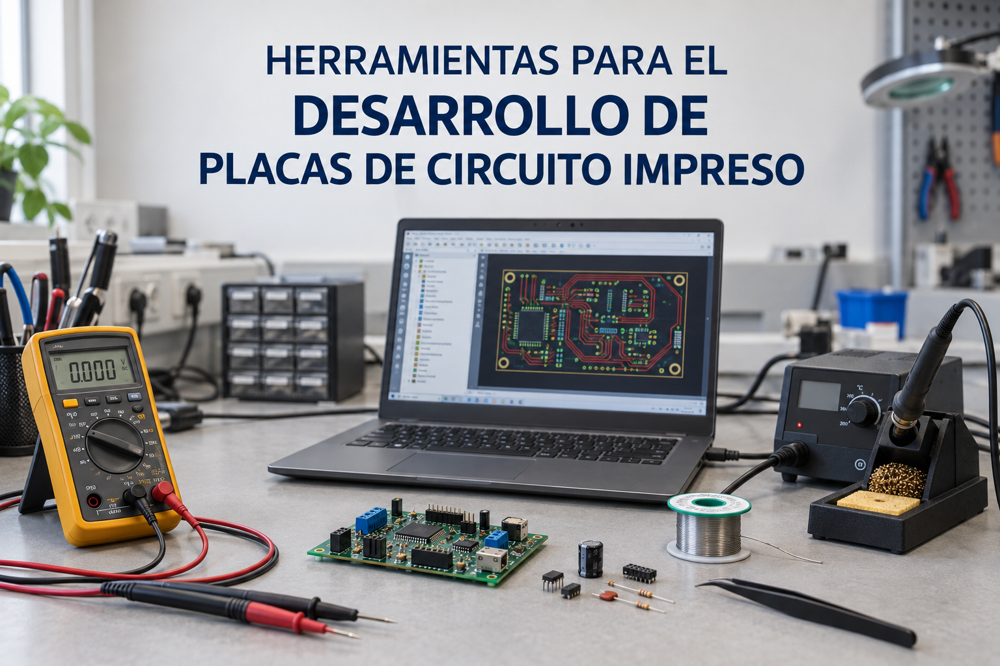

Checkpoint 1
Create the project and capture the schematic
- Create a new KiCad project and open the schematic editor.
- Add power symbols, parts, values and footprint assignments.
- Wire the circuit, add net labels and no-connection flags.

This redesigned page keeps the original project structure while improving readability, navigation and visual hierarchy. It also adds a built-in Spanish mode so the page is easier to use in class or in self-study.

In this project you move beyond breadboards and perfboards and create a complete printed circuit board for the classic 555 blinker using KiCad 7. The objective is to capture the schematic, assign the correct footprints, lay out the PCB and generate manufacturing files.

Printed circuit boards are the standard medium for compact, reliable and reproducible electronic products. They replace temporary prototyping structures with permanent copper traces, pads and footprints connected through a CAD-defined layout.
The workflow has two main stages: schematic capture and PCB layout. First, the circuit is translated into a digital schematic with symbols, nets and footprints. Then the board outline is defined, footprints are placed, tracks are routed and manufacturing outputs are generated.
Use KiCad 7.0.11 for this project. Download the installer for your operating system and keep the default installation settings except for optional help files if needed.
| Operating system | Download |
|---|---|
| Windows | Download installer |
| Mac | Download installer |
This is a compact version prepared for GitHub Pages. Adapt the exact values and footprints to your course requirements.
| Qty | Part | Symbol / value | Suggested footprint |
|---|---|---|---|
| 1 | Timer IC | NE555 | DIP-8_W7.62mm |
| 1 | LED | D1 | LED_D5.0mm |
| 2 | Resistor | R1, R2 | Axial_DIN0207 |
| 2 | Capacitor | C1, C2 | Radial / Disc_THT |
| 1 | Battery / supply connector | BT1 or J1 | TerminalBlock / BatteryHolder |

Use the schematic as the basis for your KiCad capture. Check pin orientation, reference designators, values and power connections before assigning footprints and moving to layout.
Follow the checkpoints below in order. Each card is larger than before so screenshots and animated guidance are easier to view on GitHub Pages.


En este proyecto pasarás de las breadboards y placas perforadas a una placa de circuito impreso complet del clásico 555 blinker usando KiCad 7. El objetivo es capturar el esquemático, asignar las huellas correctas, diseñar la PCB y generar los ficheros de fabricación.
Las placas de circuito impreso son el soporte estándar para productos electrónicos compactos, fiables y reproducibles. Sustituyen estructuras temporales de prototipado por pistas de cobre, pads y huellas permanentes definidos mediante CAD.
El flujo de trabajo tiene dos etapas principales: captura esquemática y diseño del layout PCB. Primero se traduce el circuito a un esquemático digital con símbolos, redes y huellas. Después se define el contorno, se colocan las huellas, se enrutan las pistas y se generan los ficheros de fabricación.
Usa KiCad 7.0.11 para este proyecto. Descarga el instalador correspondiente a tu sistema operativo y mantén la configuración por defecto salvo opciones auxiliares si las necesitas.
| Sistema operativo | Descarga |
|---|---|
| Windows | Descargar instalador |
| Mac | Descargar instalador |
Esta es una versión compacta preparada para GitHub Pages. Adapta los valores y huellas exactos según tu asignatura.
| Cant. | Componente | Símbolo / valor | Huella sugerida |
|---|---|---|---|
| 1 | Circuito integrado temporizador | NE555 | DIP-8_W7.62mm |
| 1 | LED | D1 | LED_D5.0mm |
| 2 | Resistencia | R1, R2 | Axial_DIN0207 |
| 2 | Condensador | C1, C2 | Radial / Disc_THT |
| 1 | Conector de batería / alimentación | BT1 o J1 | TerminalBlock / BatteryHolder |
Usa este esquema como base para la captura en KiCad. Comprueba la orientación de pines, referencias, valores y conexiones de alimentación antes de asignar huellas y pasar al layout.
Sigue los checkpoints en orden. Cada tarjeta se ha hecho más grande para que las capturas y animaciones se vean mejor en GitHub Pages.